使用小程序
《大学怎么过？有群很酷的人组成了机器人社团，甚至还被做成了动画》
他们，来自学校里不同的专业；
有人负责机器人研发，有人负责品牌和项目运营；
围绕着科技项目和机器人比赛，不断成长；
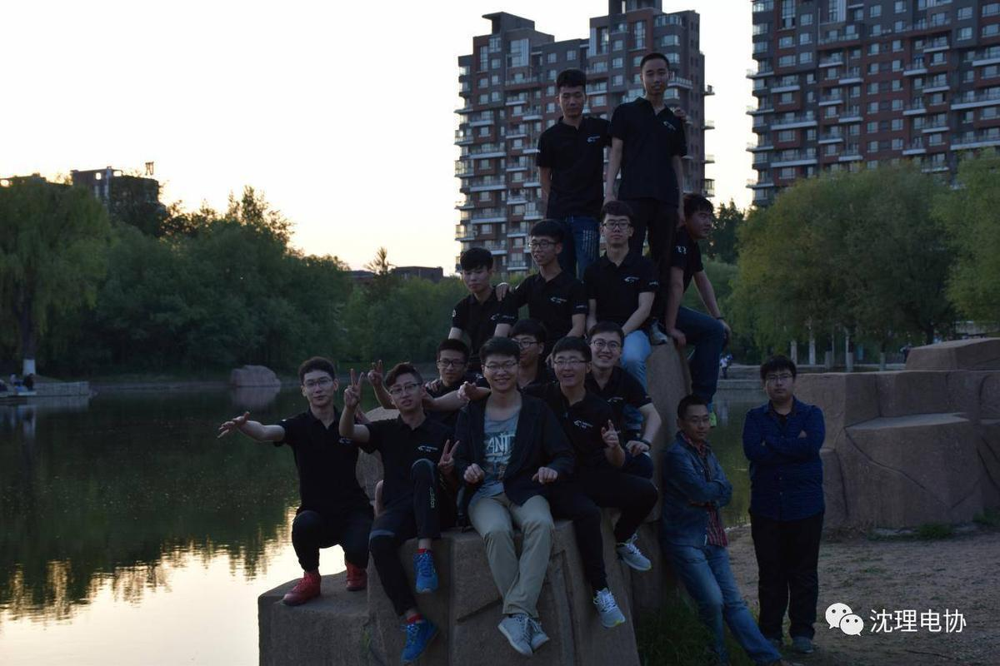
他们比一般人更加坚持；
一年默默累计的努力，在赛场一次爆发；
路上磕绊，和同伴一起迎难而上；
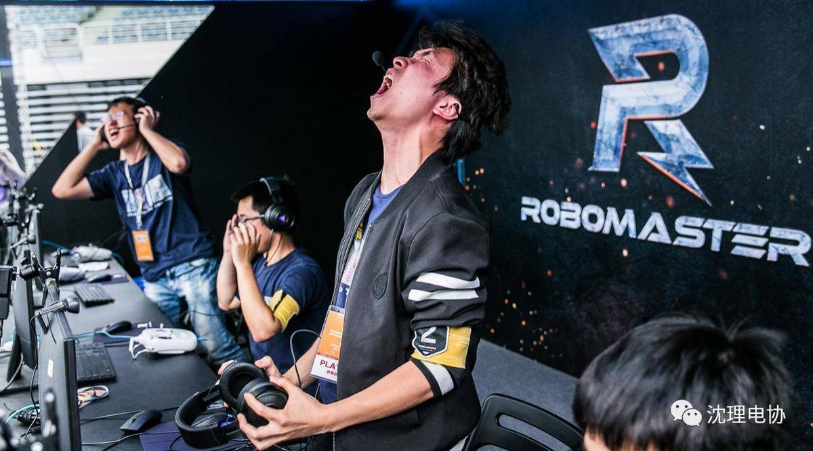
他们知道成功来之不易；
更加懂得珍惜团队和友谊；
巅峰或是失败，都去尽情的享受
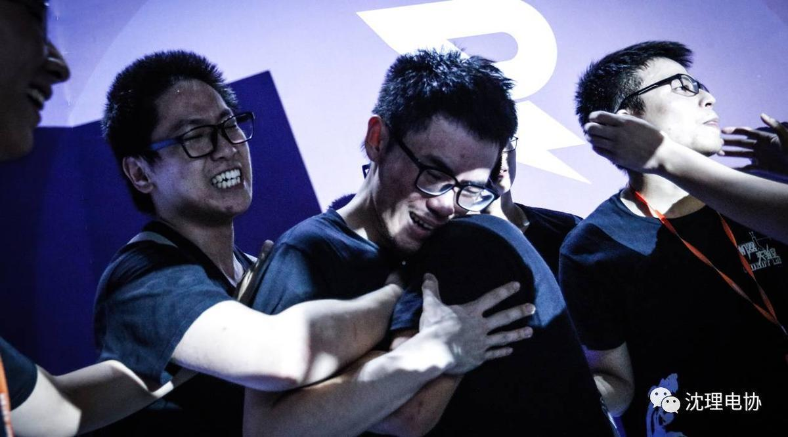
他们是 RoboMaster 机器人社团——
沈阳理工大学电子技术与应用协会（AMBITION战队）
电子技术与应用协会，简称电协是沈阳理工大学里技术雄厚的学术类社团。社团涉足方向包括，电子，机器人，无人机，3d打印，创新创业，科技制作，视觉识别，软件开发，硬件编程等多个方向。
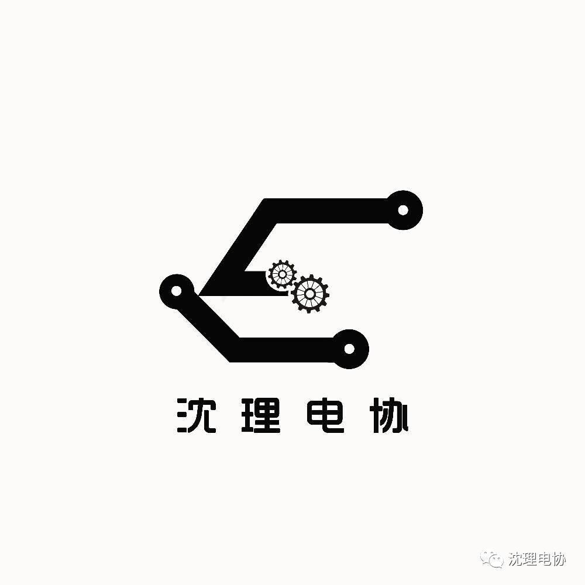
作为一个科技社团，他们很年轻，他们的故事甚至还被做成了一部动画，光是动画主题曲就觉得燃爆了！
日语主题MV视频链接：https://v.qq.com/x/page/g05561jix1k.html
机器人社团有什么不同？
电子技术与应用协会（AMBITION战队）是近几年刚成立的科技型社团，依托于学校信息科学与工程学院、机械工程学院、自动化与电气工程学院，设置有指导老师，在每一学年开学时启动招新报名，最终为全球机器人比赛——RoboMaster做准备。
不同专业背景的队员会被分配到电控、机械、算法等不同研发小组，不是研发方向的队员也受队伍欢迎，他们会负责项目和品牌宣传。这群人将组成一个数十人的机器人社团。
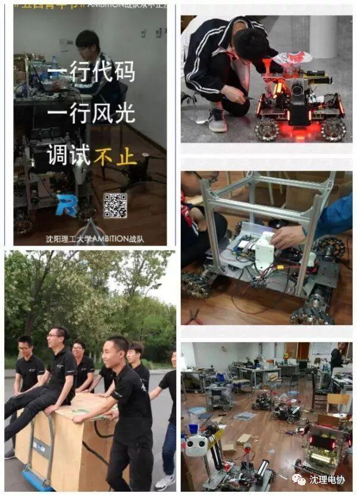
不光是我们学校，其他学校也有自己的RoboMaster机器人社团。
正因为每个学校长处不同，数百个RoboMaster机器人社团组成了一个生态圈，相互竞争和成长。在一年时间里，社团成员将一同努力，参加各种科技项目，并备战来年8月开启的RoboMaster比赛。
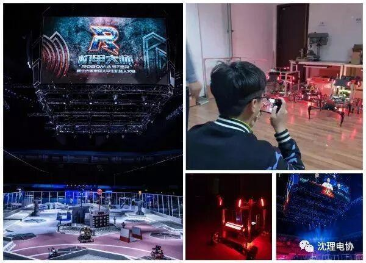
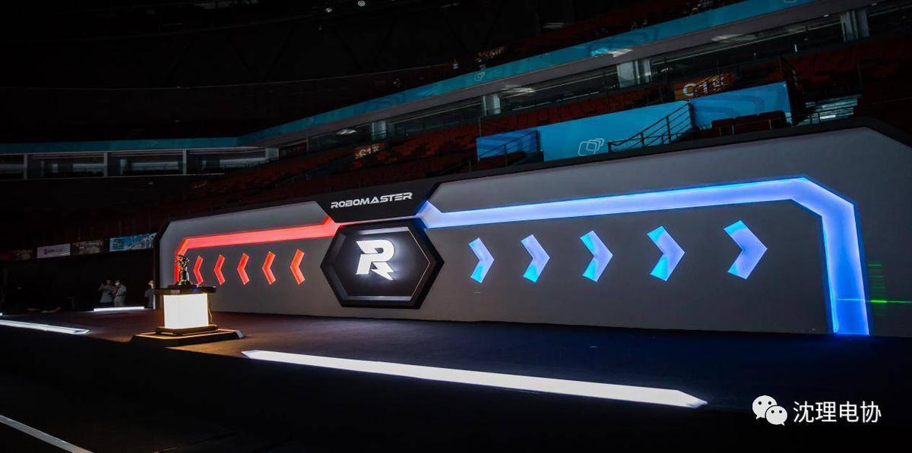
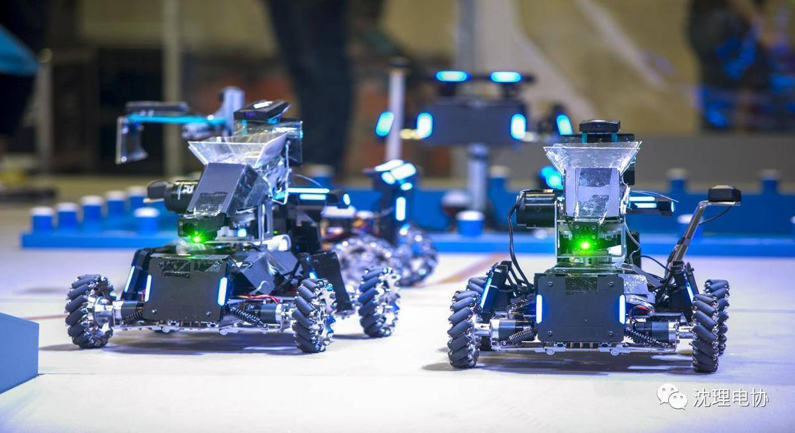
什么是RoboMaster机器人比赛？
RoboMaster机甲大师赛是一项机器人射击对抗竞技比赛。参赛队员独立设计、制造机器人参与竞技。
在比赛中，双方队员各自操作己方机器人，在指定的比赛场地内进行战术对抗，并通过操控机器人发射弹丸，攻击对方机器人。
每局比赛7分钟，比赛结束时，基地血量较多或剩余机器人总血量较多的一方获得比赛的胜利，全球总冠军可获得50万奖金！
他们的生活很酷
他们不仅学习能力强，有人保研东北大学、北京邮电大学，而且社会实践经历丰富。还有人勇敢地追求自己的梦想，在RM道路上继续走下去，深入研究算法与视觉。
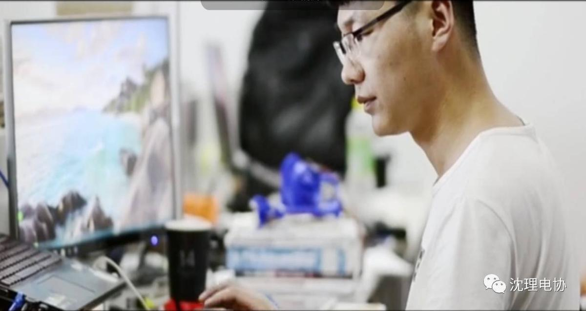
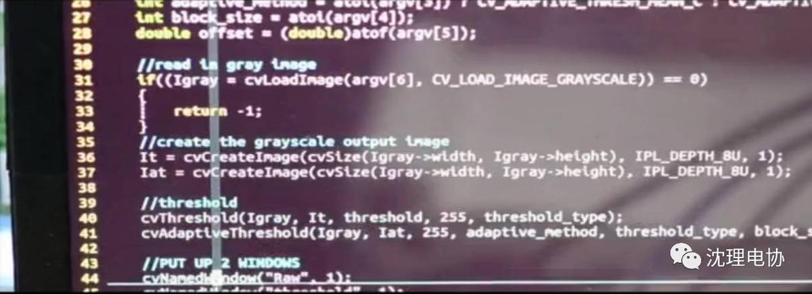
作为科技的希望，他们被很多人关注
他们的故事甚至被做成了一部动画！大疆创新公司砸下几千万，联手日本知名动画公司DandeLion Animation Studio 和 GONZO 打造了一部《机甲大师》同名动画，将他们的生活写进了二次元。
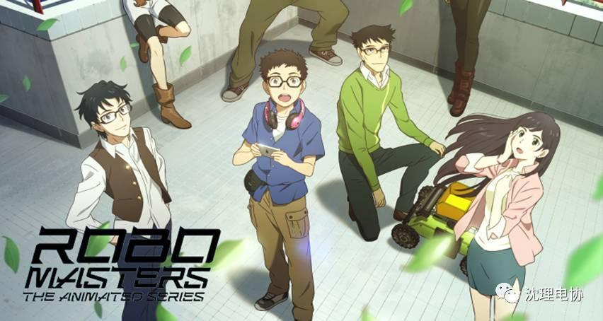
这部动画以RoboMaster比赛为背景，讲述了一名热爱机器人的大学生方单单，因童年阴影不愿意接触机器人比赛，初入大学时，却意外加入了机器人社团，在碰撞和磨合中，开始了疯狂的大学旅程。
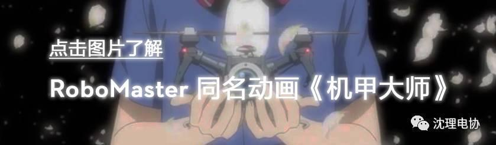
无论是耀眼的比赛场景、艰辛的备赛过程，还是机器人、无人机激烈地追逐，动画都将它们逼真地还原，让观众在二次元世界里感受科技之美。
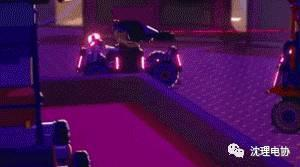
为了最真实地描绘学生在学校里全心投入研发机器人、平衡生活与比赛的艰辛，在去年，日本动画制作团队赶赴深圳，收集大量备赛经历，观看了 2016 赛季总决赛，亲身体验热血的比赛现场。
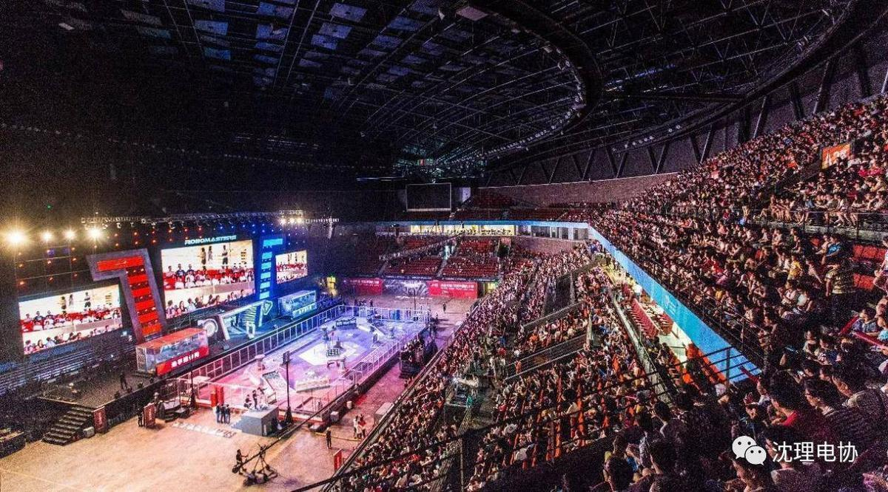
动画中文配音由苏尚卿、刘明月、幽舞越山、沈念如等众多一线配音演员献声，还有大家都熟悉的皇贞季作为配音导演指挥。
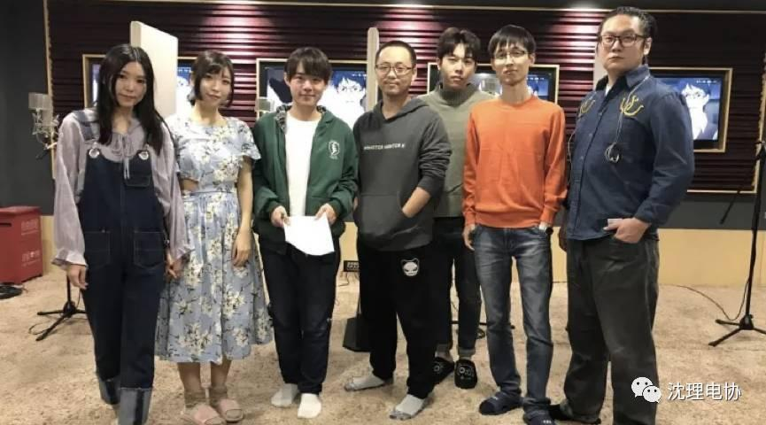
左起：沈念如、幽舞越山、苏尚卿、皇贞季、刘明月、施弘宇（录音师）、郭盛
除了角色本身，甚至他们所生活的校园环境都来自现实中著名的理工科高校——香港科技大学。制作效果简直是直接将现实搬进了动画里，都快分不出实景和动画了！
《机甲大师》，它来自于三次元的机器人竞技，讲述了一群大学生为自己所爱的事物奋斗的热血生活，他们为理想无所畏惧，一路磕碰都在所不辞。
但它不止于二次元，更是现实世界中，人们对追求梦想的执着，是我们每一个人内心深处的真实写照。
现在，《机甲大师》第一集已经登陆腾讯视频，看完后我只想说：扎心了。相信你也可以从它身上，发现并找回那些久违的、为梦一往无前的冲劲和感动。让我们一起追动画吧！
观看指南
-腾讯视频-
-每周五 21:30-
图片链接：https://v.qq.com/x/cover/qzsi90xrv8qc04w/a00247hflmu.html
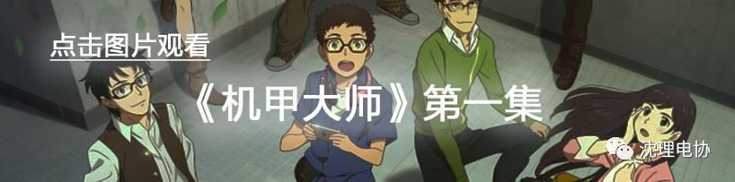
阅读原文观看《机甲大师》第一集
与你一起寻回，心底最初的梦
阅读原文链接：https://v.qq.com/x/cover/qzsi90xrv8qc04w/a00247hflmu.html
加入机器人社团，或了解更多
研发咨询：刘勇同学，邮箱1059941311@qq.com
项目/品牌宣传咨询：高星华同学，邮箱1035461528@qq.com
了解更多信息：王枭同学，邮箱417401901@qq.com
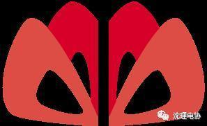